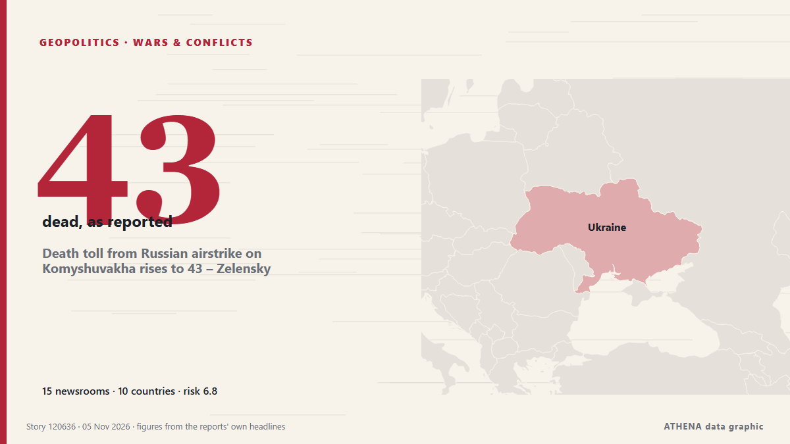

Πόλεμοι & συγκρούσεις
ΧορηγούμενοΠαρουσιάζεται από  Cybernetics and Artificial Intelligence Lab Welcome to the Cybernetics and Artificial Intelligence Laboratory, established at the Department of Business Administration of the National and Kapodistrian University of Athens. The lab is headed by Professor Dimitrios Thomakos. The lab aims to do research that can be published in top venues. Our research uses tools and methods of Artificial Intelligence, and lies in the following areas: - Forecasting - Decision making - Cyber security - Finance We are always looking forward to collaborating with exceptional students!
Cybernetics and Artificial Intelligence Lab Welcome to the Cybernetics and Artificial Intelligence Laboratory, established at the Department of Business Administration of the National and Kapodistrian University of Athens. The lab is headed by Professor Dimitrios Thomakos. The lab aims to do research that can be published in top venues. Our research uses tools and methods of Artificial Intelligence, and lies in the following areas: - Forecasting - Decision making - Cyber security - Finance We are always looking forward to collaborating with exceptional students!
| 23 Οκτ | 0 |
|---|---|
| 24 Οκτ | 0 |
| 25 Οκτ | 0 |
| 26 Οκτ | 0 |
| 27 Οκτ | 0 |
| 28 Οκτ | 0 |
| 29 Οκτ | 0 |
| 30 Οκτ | 0 |
| 31 Οκτ | 2 |
| 1 Νοε | 2 |
| 2 Νοε | 7 |
| 3 Νοε | 8 |
| 4 Νοε | 4 |
| 5 Νοε | 1 |
Οι τίτλοι των ειδήσεων παρουσιάζονται στα αγγλικά, όπως δημοσιεύτηκαν.

Death toll from Russian airstrike on Komyshuvakha rises to 43 – Zelensky
The death toll from a Russian airstrike on Komyshuvakha in the Zaporizhzhia region has risen to 43. από Ukrinform (English)
Dozens dead and missing after Russian strike on Ukrainian aid centre, officials say
Nov 4 - The death toll from a Russian bombing of an aid distribution point in Ukraine's southeastern Zaporizhzhia region on Monday has risen to 37, with dozens missing, officials said, in one of the… από The Straits Times
Drone attack sparks fire at Ozon logistics centre in Russia’s Adygea
A fire broke out at an Ozon logistics centre in the city of Adygeysk, in Russia’s Republic of Adygea, following a drone attack. από AzerNews
Russia hits power stations in Ukraine’s regions of Kyiv
Russia has hit two power stations in Ukraine’s regions of Kyiv and Zhytomyr, the Russian defence ministry said on Telegram on Wednesday, keeping up nearly daily strikes on its neighbour’s energy… από Cyprus Mail
Russian strikes disrupt water and power in Kyiv
KYIV, Ukraine, Nov 4, (AP): Overnight attacks on critical infrastructure triggered power and water outages across Kyiv and surrounding regions Wednesday as rescuers combed throug... από Arab Times
Russian strike on Kharkiv hospital raises injury toll to 73
In Kharkiv, 73 people were injured as a result of a Russian attack on the night of November 3. από Ukrinform (English)
North Korea launches unidentified projectile toward the sea, South Korea says
South Korea says North Korea has launched an unidentified projectile toward the sea. από ABC News (International)
2,800 troops to join first Ukraine support force exercise in Poland
The drill will simulate moving troops and supplies such as food and fuel, and was agreed at a Coalition of the Willing summit in July. από The Independent
US strikes Iran’s Qeshm island – Report
The US has not publicly announced the attacks, so as not to signal any intention of resuming major combat operations, the Wall Street Journal reported. από CNA (Channel NewsAsia)
Iran Speaker: Ball in US court to prevent war
Shafaq News- Tehran Iran has delivered a "strong and rational response" to Washington, and the ball is now in the United States' court to prevent war, Parliament Speaker Mohammad Bagher Ghalibaf said… από Shafaq News (English)
Death toll hits 29 after Russian strike on Ukrainian aid site, with 48 still missing
Russia launched 289 attack drones, 17 ballistic missiles and 59 cruise missiles across nine regions, President Zelenskyy said in an online post that noted the barrage coincided with U.S. elections. από NPR
War widens in the Black Sea in a test of NATO red lines
LONDON/BUCHAREST, Nov 3 - After seven strikes on cargo ships near NATO members Romania and Bulgaria last month, the US-led military alliance said it would deploy maritime patrol aircraft, radars and… από The Straits Times
Iran-US deal still out of reach despite heightened diplomatic efforts
Iran and the United States are far from reaching a deal to end the war, a senior Iranian official told Reuters on Tuesday, despite heightened diplomatic efforts to prevent a potential return to… από Arab News
Putin orders private data centres to set aside 10% of capacity to support IT infrastructure
Russian data centers have become targets of Ukrainian drone attacks in recent weeks. από The Moscow Times
Greece inks deal for KC-390 fleet
The purchase, arranged via a government-to-government agreement between Greece and Portugal, covers three KC-390 aircraft with options for up to six manufactured by Brazilian planemaker Embraer. από Breaking Defense
Zelenskyy: Ukraine will halt strikes on Russian refineries if US provides interceptors
President Volodymyr Zelenskyy has informed US media that Ukraine will stop targeting Russian oil refineries in exchange for Patriot interceptor missiles or halted Russian attacks. από Ukrainska Pravda (English)
N. Korea tests 'dispersal warhead' for cruise missiles following cluster bomb test
SEOUL, Nov. 3 (Yonhap) -- North Korea has tested a "dispersal warhead" for a str... από Yonhap (English)
Oil prices plunge more than 4% as US-Iran talks raise hopes of ending war
Both oil benchmarks are down in early trading. από The Business Times
Iran Says Contacts Over Ending War Continue After Talks Finish With No Breakthrough
Contacts between Iran and the United States to end their eight-month war are continuing, Tehran said on Monday, after days of Iranian talks with Qatari mediators ended with altered proposals but no… από gCaptain